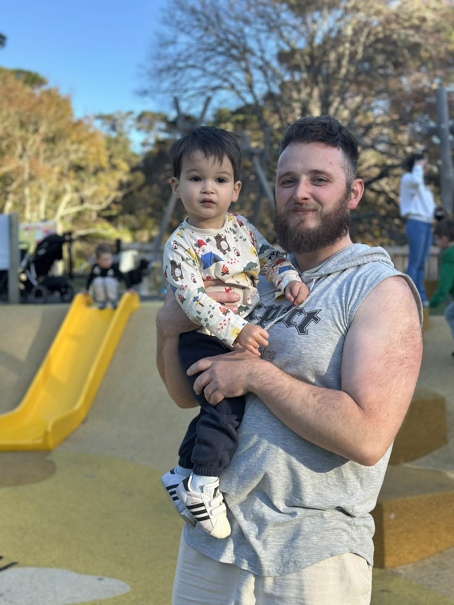

Jesse Lockwood - Visual Foundry
At Visual Foundry, everything begins with a hands-on approach to creation — because this is a one-man studio, built on passion rather than scale.
Outside of design and development work, life revolves around family. Being a family man is at the core of everything here, and that perspective
shapes the care, patience, and attention poured into every project.
A formal education in web design at the Institute for Digital Craft &
Interactive Media helped refine my technical skills and creative discipline, laying the foundation for a deeper understanding of design, UX, UI,
and development principles.
But the craft didn’t stop there. In spare moments away from the screen, time is often spent in a workshop — hammer
in hand, working at an anvil, building and shaping things the old way. That same mentality carries directly into my digital work: shaping ideas
slowly, deliberately, and with intention. Visual Foundry was created around that philosophy — that nothing should feel mass-produced or generic.
Every project is built by hand in spirit, shaped with care, and refined until it feels alive. Nothing here is off-the-shelf. Nothing here is
accidental. The goal is simple: to take unique ideas and transform them into something equally unique in return — work that stands apart,
carries identity, and leaves a lasting impression. At Visual Foundry, design isn’t just delivered, it’s forged.
Craft in Action
Every idea eventually leaves the workshop and becomes something real. Explore a selection of hand-built projects where design and development come together in fully crafted digital work.
See My Work